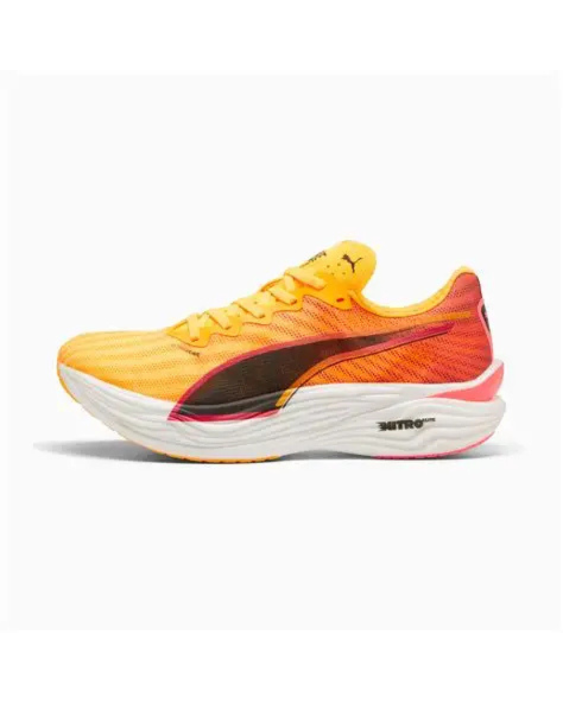

RACE｜カーボンレーサー
クッション、反発、グリップがそろう。
衝撃吸収147SAはレース部門21足で6番目、前足部のエネルギーリターン76.3%は8番目、摩擦係数0.67は20足で6番目。どの数字も上位にあるが、実測204gは21足で14番目の軽さ。性能点3.87は8位である。
クッションの厚いレース靴がほしい人。雨のレースも想定する人。
とにかく軽いレース靴がほしい人。かかとの安定を重視する人。

前足部のエネルギーリターン76.3%は21足で8番目、かかとも77.1%で6番目。衝撃吸収147SAも6番目で、スピードは4.5点、クッションは4点ある。
摩擦係数0.67は20足で6番目で、グリップは4.5点。比較したヴェイパーフライ 4の0.45を大きく上回る。
実測204gは21足で14番目。比較したほかの3足より26〜41g重く、軽さは4点にとどまる。
5点満点。計測値を当サイトのルールで点数にしたもの。
スピードとグリップが4.5、クッションと軽さが4.0。安定性2.0と耐久性3.0が低い。
軽いほど短い。
高いほど滑りにくい。
| ディヴィエイト ニトロ エリート 3 | ヴェイパーフライ 4 | アディオス プロ5 | メタスピード スカイ 東京 | |
|---|---|---|---|---|
| 価格 | ¥29,700 | ¥29,700 | ¥29,700 | ¥29,700 |
| 実測重量 | 204g | 166g | 178g | 163g |
| 衝撃吸収（SA） | 147 | 137 | 149 | 147 |
| エネルギーリターン前足部 | 76.3% | 74.5% | 80.4% | 78.2% |
| 摩擦係数 | 0.67 | 0.45 | 0.74 | 0.66 |
| 摩耗深度 | 1.6mm | 8.6mm | 1.1mm | 1.4mm |
| 性能点 | 3.87 | 4.09 | 4.14 | 4.36 |
| コスパ点 | 4 | 3.5 | 4 | 4.5 |
同じ¥29,700の3足と比べると、性能点は最も低い。ただグリップはヴェイパーフライ 4とメタスピード スカイ 東京を上回り、摩耗深度1.6mmもヴェイパーフライ 4の8.6mmより少ない。1kmあたりは約74円で、メタスピード スカイ 東京と同じである。
ドロップは10mmで、比較した4足で最も大きい。曲げ剛性は18.1Nで、20足の中では柔らかいほうから8番目。フォーム硬度は35.5ACで、18足の中では硬い側に入る。
試し履きでは、ドロップ10mmと204gの重さが、レースペースで気にならないかを確かめたい。推定寿命は約400kmで、1kmあたりは約74円。
レース用の2足目として考えたい。グリップが高いので、天気が読めない時期のレースでも選びやすい。
クッション、反発、グリップがそろって上位にあるレース靴。重さで点を落として8位にとどまる。軽さより、路面とクッションの安心を取りたい人の靴である。
※本記事は海外ラボ（RunRepeat）の計測データとメーカー公表値、当サイトの計算をもとにした分析です。計測はUS9（約27cm）です。1kmあたりの費用は摩耗深度から推定した寿命での概算です。価格は当サイトの掲載値で、変更されている場合があります。